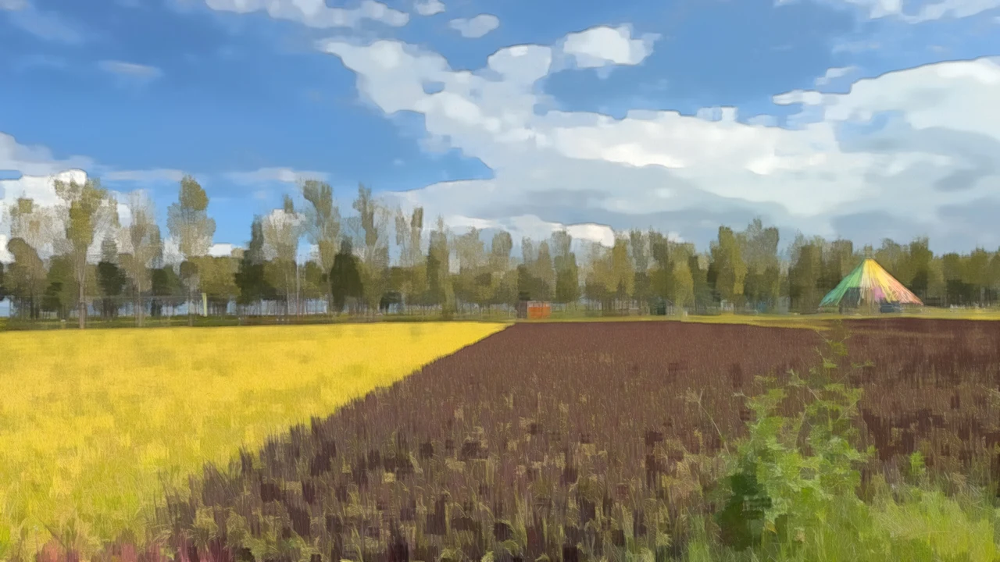
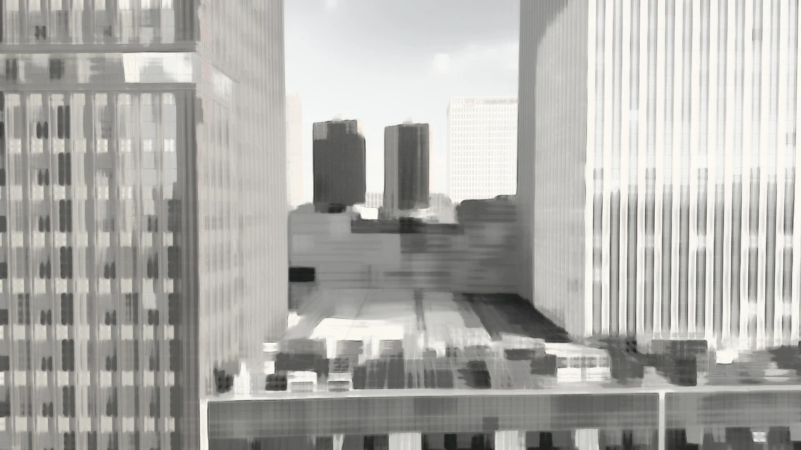
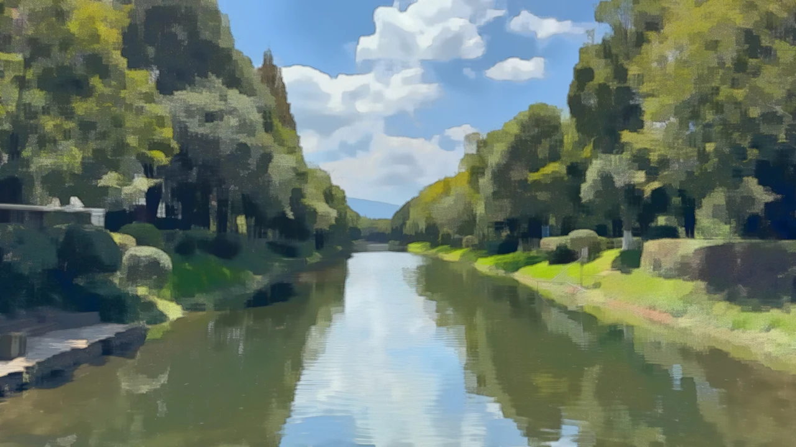
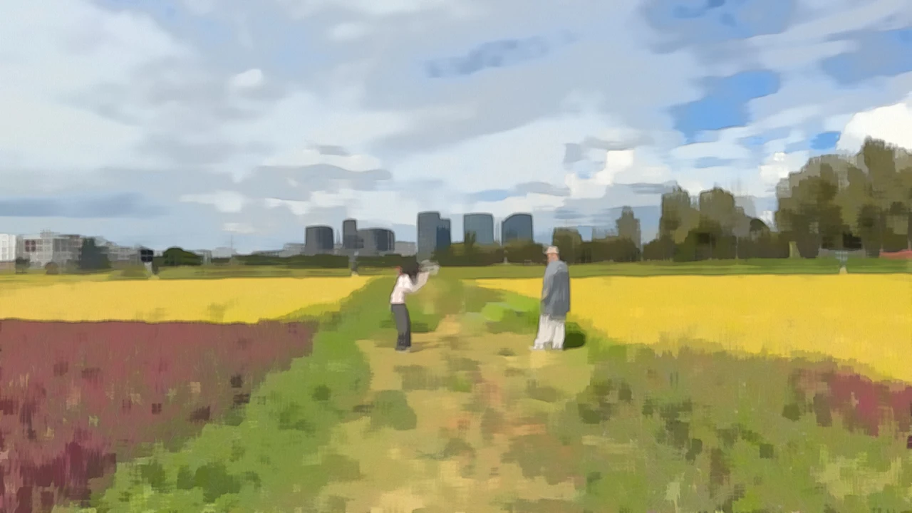
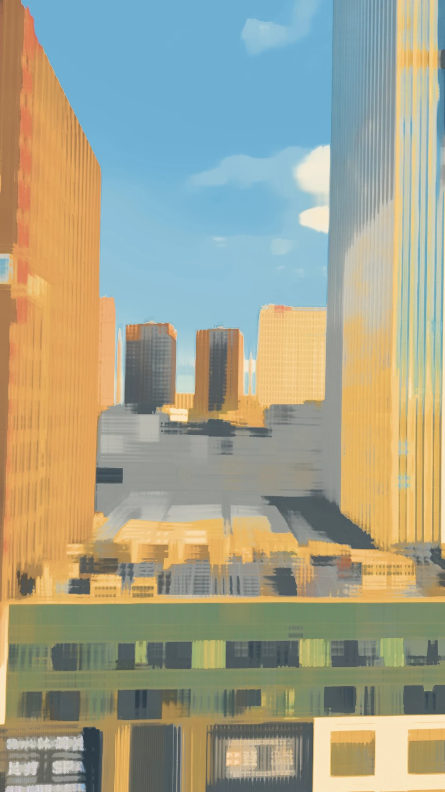
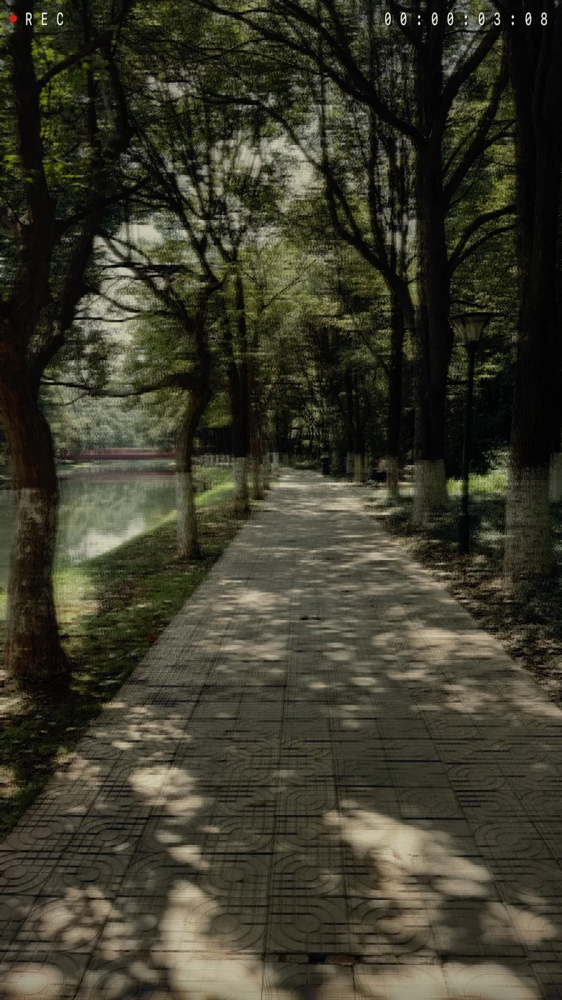
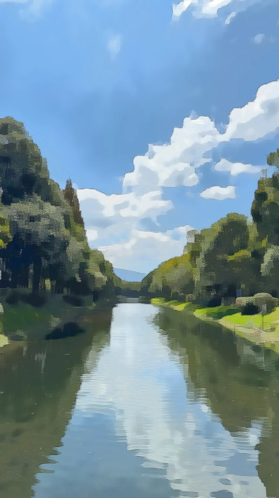

Смотрите и снимайте.
Фильтры в реальном времени для фото, видео и Live Photo. Live Photo по умолчанию выключено — включайте при необходимости.
简体中文 · 繁體中文 · English · 日本語 · Français · Deutsch · 한국어 · Español · Tiếng Việt · Русский
Magic Camera · iPhone · iOS 18+
Новый взгляд на красоту вокруг вас.
Пиксели, тушь, витражи и эхо времени. Снимайте фото, видео и Live Photo с фильтрами в реальном времени на iPhone. Сохраняйте и делитесь по своему выбору.

MAGIC CAMERA / IN FOCUS
На снимках сохранён исходный китайский интерфейс. Приложение поддерживает десять языков. Некоторые стили и настройка интенсивности требуют Pro.
20 SECONDS / REAL CAPTURES
Запись экрана приложения · Смена стилей в реальном времени и Старая видеокассета
Настоящие пейзажи. Ваш личный арт-альбом.






Фильтры в реальном времени для фото, видео и Live Photo. Live Photo по умолчанию выключено — включайте при необходимости.
Доступ для добавления в «Фото» запрашивается при экспорте
Включает фильтры и функции Pro, добавленные в будущих версиях.
Бесплатная версия включает оригинал и первые пять художественных фильтров со стандартной интенсивностью, а также видео до 15 секунд. Работы сначала сохраняются в приложении.
Все художественные фильтры · Настройка интенсивности
Без заданного лимита записи
Одна покупка · Без подписки
Снимает бесплатный лимит 15 секунд на видео. Длительность всё ещё зависит от места, температуры и системных прерываний.Экспортируйте важное в «Фото» или другое место. Удаление приложения стирает локальные работы. Восстановление покупок не возвращает удалённые фото и видео.
Как это работает →